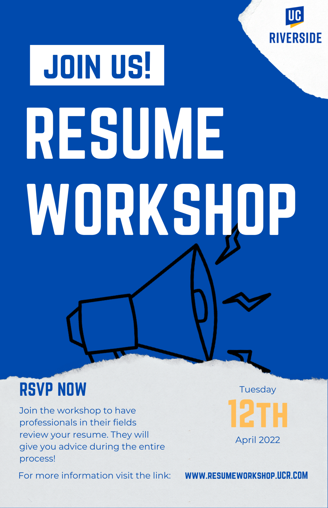
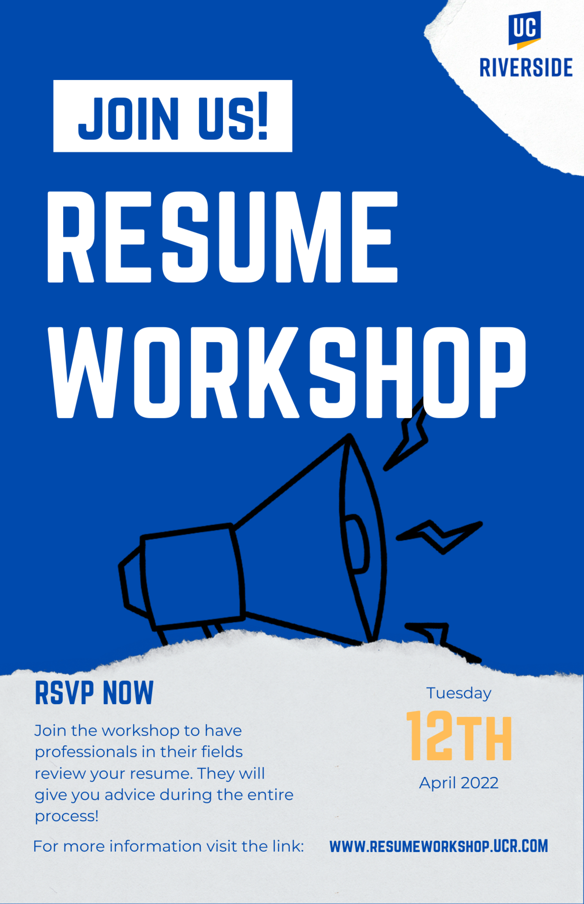
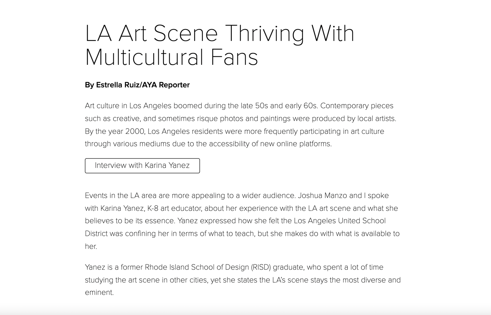
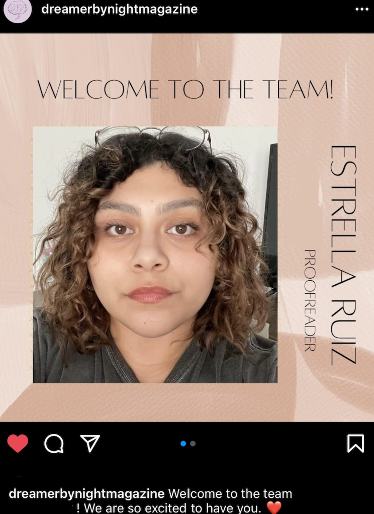
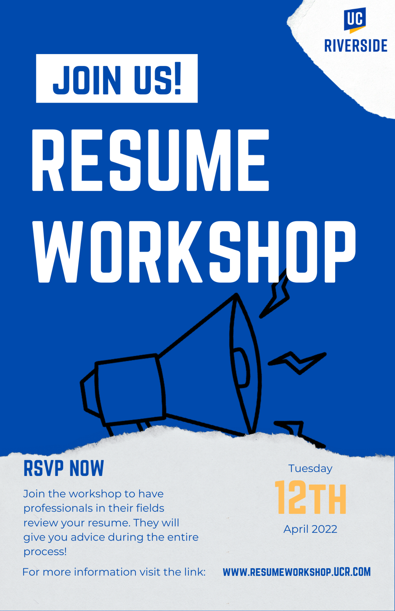
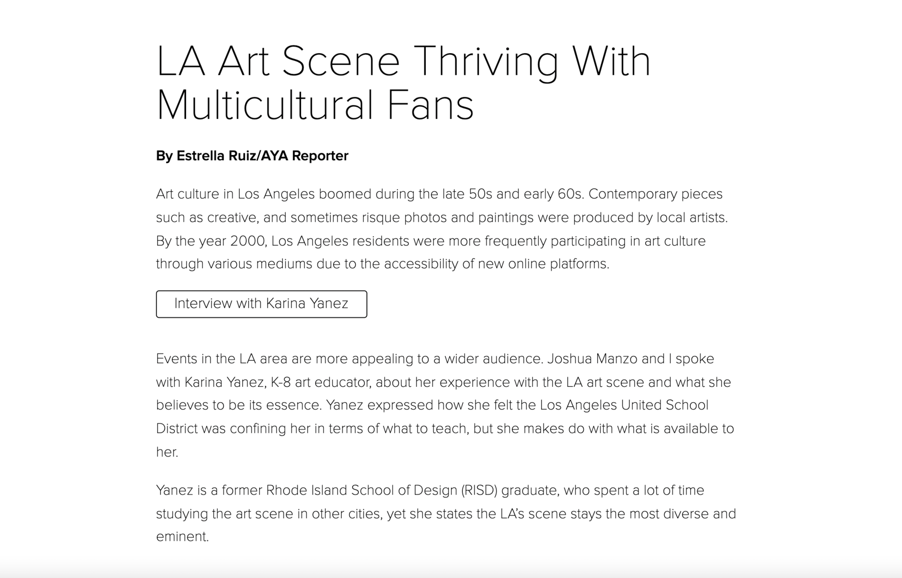
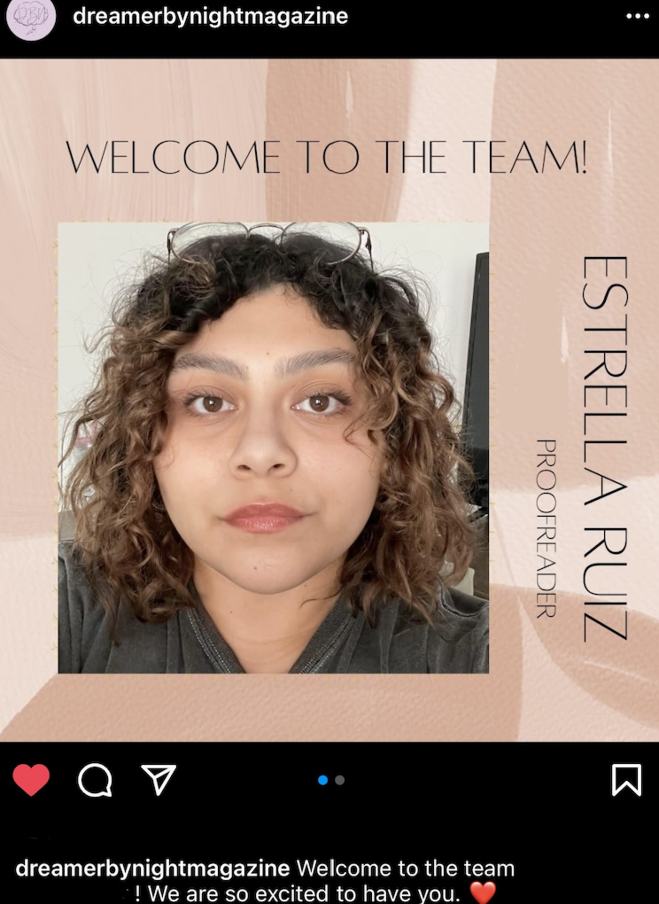

Estrella Ruiz
Ruiz is a full-time student at University of California, Riverside, where she is pursuing a degree in comparative literature. Ruiz is looking to expand her work in the fields of editing, publishing, marketing, and education.
In 2018, Ruiz began her time at USC Annenberg School for Communication and Journalism where she went on to produce 2 podcasts, wrote 3 articles and published them to USC's newsite. Ruiz is currently an AVID/Subsitute teacher at Jurupa Middle School where she grades the students assignments, helps them work through problems of all subjects, and serves as a college mentor. As of February 2022, Ruiz was chosen as a proofreader for Dream by Night Magazine. As a proof reader, Ruiz goes through the manuscripts to check for correct grammar, mistakes, inconsistencies, and as a whole inspects how well the magazine flows.
Ruiz is planning to join a doctorates program in which she will study in further depths the fields of Comparative Literature with an emphasis in Spanish–Latin American– Literature.
Experience
AVID Tutor/Subsitute
• Tutored over 100 students over the span of 6 period classes
• Guided students to success by aiding them during their problem-solving process
• Wrote 30 reports daily describing the students behavior and academic progress
Proofreader
• Proofreads poetry, prose, pieces of fiction, and any written submissions to the magazine for grammar and formatting
• In charge of editing the magazine writers works and going over interview writing samples. Leaves edits and notes regarding the design of the manuscript, checks for coherence between the writing and design for Summer 2022 Edition #3: Reflections.
Team Member
• Wrote over 200 reports on Slack tracking the progress of the store, trainees, and any issues
• Assembled and disassembled the Taylor C712 Soft Serve Machine twice per week
• Served ahboong ice cream to over 400 customers per workday and made the mixes for batters
• Took inventory, placed orders for ingredients, and met with social media influencers for product advertisement. Completed daily checklists for in-store cleaning and maintenance procedures
Peer Educator
• One of the 250 teen leaders who educated over 6,500 high school students with innovative workshops founded by National Council of Jewish Women
• Researched and produced workshop scripts surrounding the topics of sexual health, consent, and sexual violence prevention
• Peer educators aimed to facilitate the conversations surrounding sexual health by giving an interactive presentation to grade levels 11th-12th
• Helped sparked rich conversations by probing students with challenging questions on the subject at hand
Education
University of California, Riverside
Portfolio
 



 